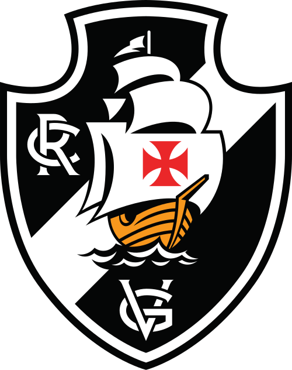

Sport Club Corinthians Paulista, comumente referido como Corinthians, ou ainda pelo seu acrônimo SCCP, é um clube poliesportivo brasileiro da cidade de São Paulo, capital do estado de São Paulo. Foi fundado como uma equipe de futebol no dia 1 de setembro de 1910 por um grupo de operários anarco-sindicalistas na região da Ponte Grande, no bairro do Bom Retiro. Seu nome foi inspirado no Corinthian Football Club de Londres, que excursionava pelo Brasil.
Frases relacionadas ao time
Torcidas organizadas
| Adversário | Local | Data | Horário | |
|---|---|---|---|---|
| Bahia | Itaquera | 16/08/2025 | 21:00 | |
|
 |
Vasco | Rio de Janeiro | 24/08/2025 | 16:00 |
| Atlético Paranaense | Curitiba | 27/08/2025 | 21:30 |